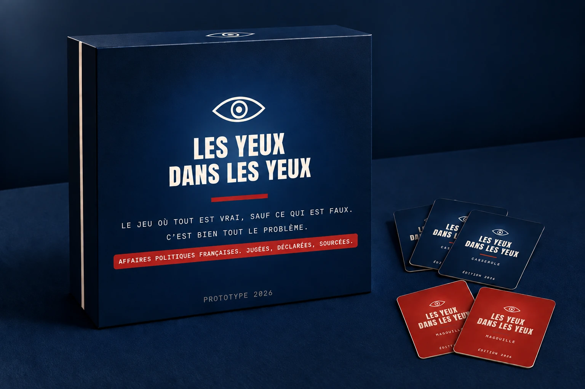

Party game · 3 à 8 joueurs · Prototype 2026
On vous lit une affaire politique française. Vous votez : info ou intox ? Emplois fictifs, frais de bouche, dromadaire offert. Trop gros pour être vrai, en général c'est vrai. C'est ça qui gêne.
Casserole 1 sur 5
Un fait politique français, lu par le Porte-parole. Posez votre bulletin.
Le prototype est complet et joué. 100 Casseroles, 25 Éditions spéciales, 50 Magouilles, le plateau : le tout tient dans une enveloppe. La règle complète et le Registre des scellés, qui prouve chaque fait, sont à vous. Un mail suffit.
contact@lesyeuxdanslesyeux.info
Prototype aux Nuits du Off, Festival International des Jeux de Cannes, 23 au 27 février 2027
Du jugé et du déclaré public, rien d'autre. Chaque carte a sa page au Registre des scellés, livré avec le jeu. Rien à plaider. Pièces en annexe.
La carte dit le fait, la table décide du reste. De 1958 à 2026, même barème pour tous les bords. Le seul endroit où ils sont traités pareil.
2 700 faits identifiés, 200 cartes en boîte. Le reste attend son millésime. La matière première se renouvelle à chaque législature, sans effort de notre part.
Quentin Grimal fait de la publicité le jour. Le soir, il lit des comptes rendus d'audience, des rapports de la Cour des comptes et des archives de l'INA, et il en fait des cartes.
Les yeux dans les yeux est son premier jeu. Il a été écrit pour une table de huit, un verre dans la main, avec une règle simple : on ne rit que de ce qui est arrivé.